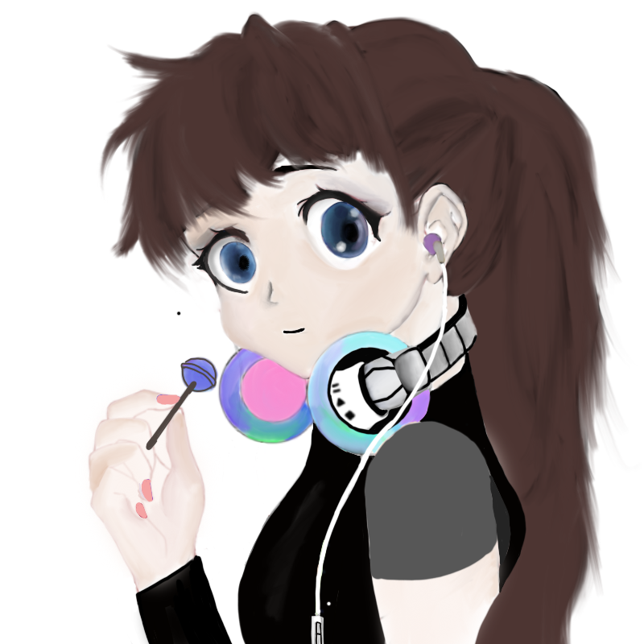

Hello, my name is Kaitlyn, im 14 and I like Science. My favorite colour is yellow though it changes over time which means that I have liked every colour of the rainbow at one point. Actually i'm gonna change that right now so its currantly mint. Mint is like a cross between blue green and white. Not aqua though cause thats just too bright: Says the person that liked yellow. My favorite website is reddit.com. My favorite book is Divergent even though something really bad happens in the end which i'm not gonna spoil. The book is written well and creates another universe. I like sci-fi books mostly with some tragety to make an impact on the reader but not too much like what happens in the Divergent series. I also can shuffle dance as I learned in grade 7 and have been improving it since then. Truth is I dont really like pie but for some reason that is what i'm going to do for the Yummy recipie assignment because I cant think of anything else to do for some reason. My favorite food is steak and icecream. (not together though seperately)This is my picture below because it is the only one on my google drive right now.

I took this course because it seemed interesting to make games and learn some coding. Before I generally liked working with computers in making powerpoints,and I previously did some html and css. I liked creating things myself and creating a website or game and found when a mistake was solved it was very exciting.